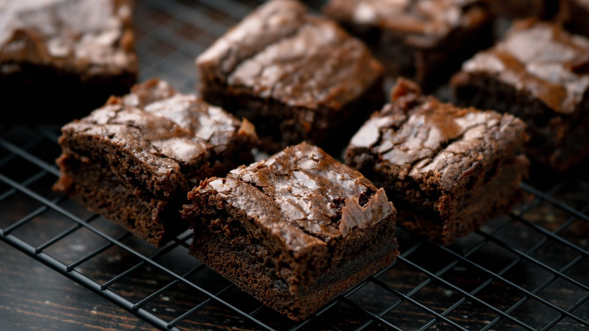

Chocolate Chip Brownies

Before you start heat the oven to 160°C fan and grease a 28 x 18cm tin. They have to cool completely in the tin before they can be cut.
Ingredients
Method
- Heat the oven to 160°C fan and grease a 28 x 18cm tin.
- Melt the 100g butter or margarine and the 50g dark chocolate together over hot water, then take off the heat and leave to cool.
- Stir in the 175g dark soft brown sugar.
- Mix the 2 beaten eggs with the ½ tsp vanilla extract, then add to the mixture.
- Mix in the 100g self-raising flour, a pinch of salt and the 50g chocolate chips.
- Pour into the tin and bake at 160°C fan for 25-30 minutes, until the top is crispy and the inside still soft.
- Leave in the tin until completely cold before cutting into squares.
Notes
The original uses 50g chopped walnuts where this has chocolate chips.